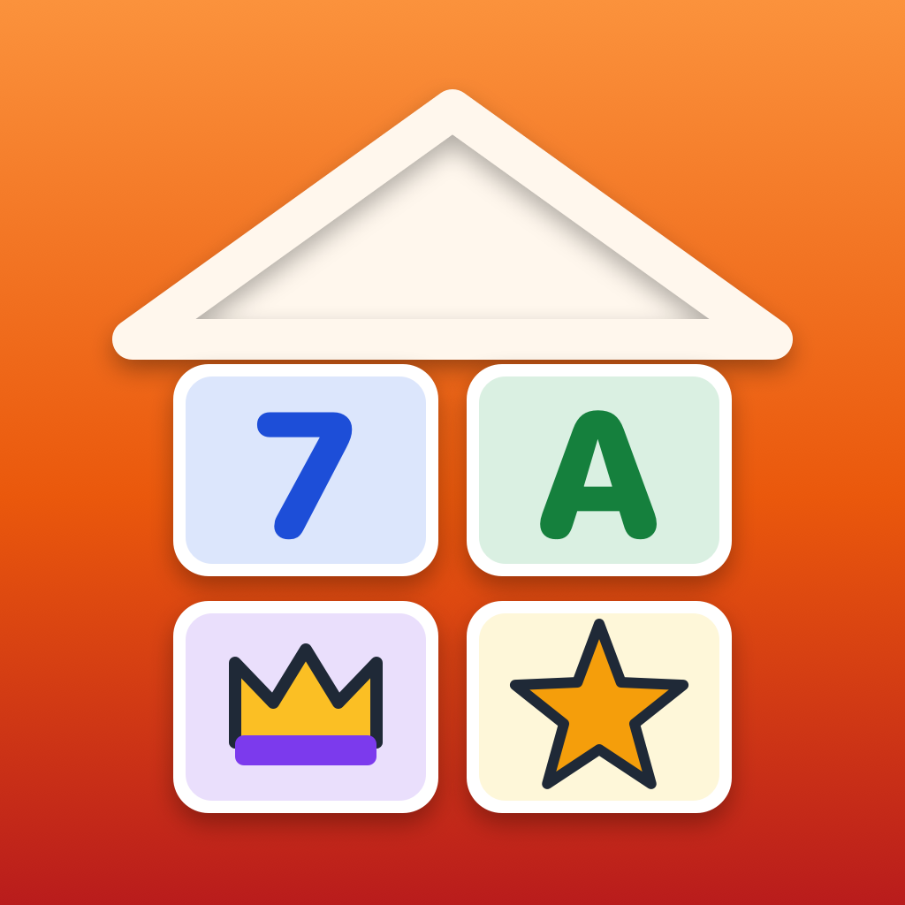

Family Puzzles & LearningPrivacy Policy
No accounts, ads, analytics or tracking, and nothing is sent to us.
This policy explains how Family Puzzles & Learning (“the app”), a family app for iPhone, iPad and Mac with large-print puzzles and games for grown-ups and Kindergarten to Grade 8 learning for kids, developed by Kevin Fitzgerald, handles information.
Information we collect
None. Family Puzzles & Learning does not collect, store, sell or share personal information on any server, and it does not include analytics, advertising, crash-reporting or tracking tools of any kind.
Information stored on your iPhone, iPad or Mac
To work, the app keeps the following on your iPhone, iPad or Mac only:
- Your family’s profiles: each name, picture, color, text size and, for a child, the grade
- Each profile’s games in progress, puzzles solved, lesson progress, stars and badges, and Math Facts scores
- Your settings, and whether Family Pro is unlocked
It stays in the app’s own storage on your device. If you are signed in to iCloud, it also syncs through your own private iCloud database, so your iPhone, iPad and Mac show the same profiles; Apple stores it in your iCloud account and we cannot see it. It is never sent to us. Deleting a profile in the Family tab removes it from every device; deleting the app removes the copy on that device.
Made for families
The app has no accounts, ads, analytics, tracking, chat or social features. The purchase, the web links and deleting a profile are behind a grown-ups-only question (a sum written in words).
Offline
Every puzzle and lesson question is made on your device. The app doesn’t download content and works without the internet; the only network use is Apple’s: iCloud sync and the App Store for the Family Pro purchase.
Read-aloud
Read-aloud in lessons and the Game Night caller use your device’s own voice. Nothing you hear is sent anywhere.
Purchases
Family Puzzles & Learning is sold through Apple’s App Store. Apple handles payment; we never see your payment details.
Children’s privacy
Because the app collects no personal information from anyone, it does not knowingly collect personal information from children.
Changes to this policy
If this policy changes, the new version will be posted on this page with a new effective date. If the app ever begins collecting data, this policy will be updated before that happens.
Contact
Questions about this policy or the app: help@fitztoppicks.com.